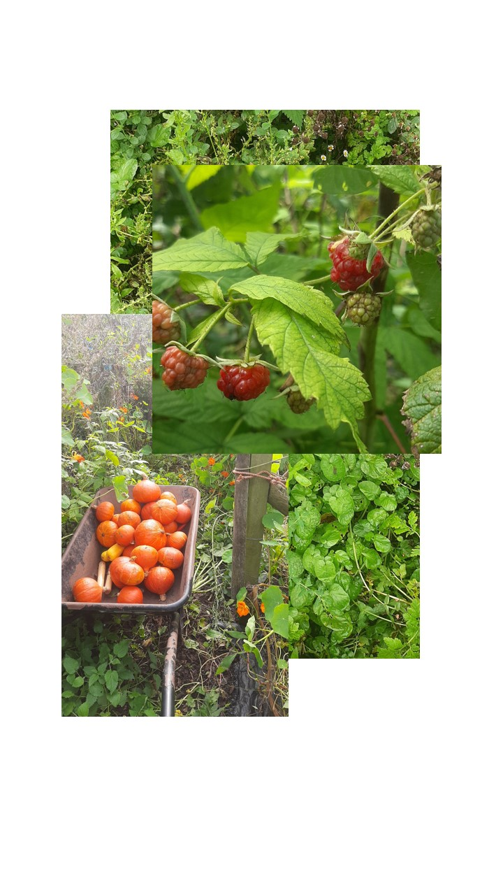
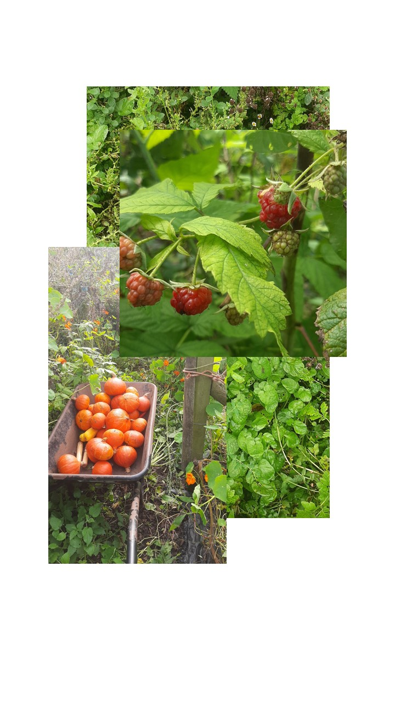

Dinas Powys, Wales, UK
 


23.9.23
כל בוקר בגינה אני הולכת עם מנגינות, מרגישה שמש על העור או ענן ורוח, הראש שלי עף מחלומות ויצירות והשראה,
בערב בדירה השכורה באותם הרגלים, נרדמת עם אוזניות כדי לא לחשוב, עסוקה בלכבות את עצמי ולרצות את מי שסביבי.
לא יודעת אם זה צבוע או פשוט מורכב!

7.9.23
את דניאל ואת אבא שהיו האנשים האחרונים שהכרתי והמשכתי לבד ופתאום מוצפת בהמון המון רגשות שעוד אין מחשבות שמחוברות אליהן.
פשוט מרגישה
כל צעד שעשיתי השבוע באוטובוס ברגל בטרמפ על צוק ובביצה ברגליים ספוגות בוץ,
כל צעד הוא החלום ולעבר החלום,
להתעצבן ולהירגע, לחטוף פחד גבהים ולהיות חלשה, לריב ולהשלים, הכל חלק מזה,
עכשיו מפרקת את החלום הגדול ורב השנים שלי לחלומיות קטנות,
לקנות בקבוקים קטנים של שמפו ומרכך בסופר,
לקרוא ספר באנגלית
לחייך לזרים
להסתפר קצר, אני יודעת שלא אהיה יפה יותר, אבל דווקא רוצה לשחרר את היפה יותר לטובת שמחה וקלה יותר, להגיד לעצמי אין מה לעשות , ולהאמין ששינוי חיצוני יכול להיכנס פנימה ולא רק הפוך.
בריטניה של האגדות והפיות משכה אותי אליה במקרה, זכרון ילדות שנקבר ועכשיו חזר ועלה וכמה שהתגעגעתי להאול המכשף ולצ'יטי צ'יטי בנג בנג ולאיילים כסופים ולאדומי חזה שמראים את הדרך. הם היו חלק מהמסע שלי הרבה הרבה לפני שהייתי כאן בעצמי.
בדרכים ארוכות שומעת שירים בעברית ומרגישה שהלב בבית. ברגעים שפוחדת נהיית אמיצה. בסוף אני מכינה את הקרקע לאהבה גדולה.
כל מה שארזתי בתיק הראשוני, 28.8.2023